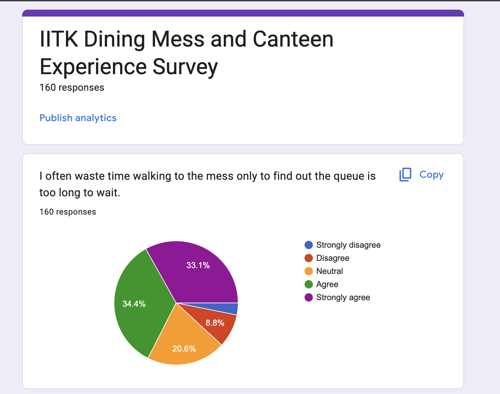

Because right now, trying to grab a meal looks exactly like this...

"...and so, we built"
Student books extras, gets a live QR, and hands it to the mess worker for verification at the counter.
After the mess flow, the same student checks live crowd levels and then places a paid canteen order.
Canteen manager takes over, assigns the delivery coordinator, and the order closes only after the student OTP is confirmed.
Publicly accessible at: cushy-chanda-unmaltable.ngrok-free.dev
name-feature), feature-scoped directories, and
mandatory PR reviews minimized integration pain.